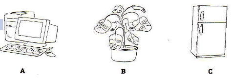

Circle the correct letter, A - C.
What is Harry’s problem?
Which of the items below does Harry want to sell?

Where is Harry going to advertise his books for sale?
Andrea thinks it is unlikely students will buy the furniture because…
Andrea thinks that a second hand shop…
Complete Harry’s notes using NO MORE THAN TWO WORDS.
Complete the Fitness Centre brochure using NO MORE THAN TWO WORDS.
Complete the notes below using ONE WORD ONLY.
Complete the table below Write ONE WORD OR A NUMBER for each answer.
Complete the lecture notes using NO MORE THAN THREE WORDS for each answer.